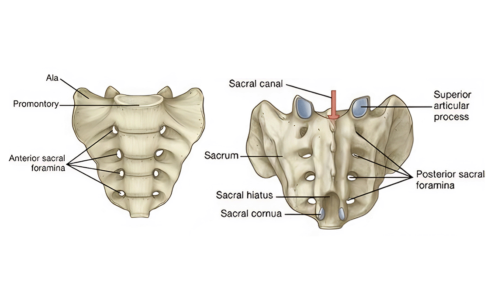

Definición del Hueso Sacro
El hueso sacro es un hueso triangular grande y plano situado en la base de la columna vertebral. Se forma por la fusión de cinco vértebras sacras (S1-S5) y constituye la pared posterior de la pelvis. El sacro se articula superiormente con la quinta vértebra lumbar (L5) y lateralmente con los huesos ilíacos de la pelvis, formando las articulaciones sacroilíacas.
Este hueso es fundamental para la transmisión del peso corporal desde la columna vertebral hacia las extremidades inferiores a través de la pelvis. Su forma triangular invertida y su posición estratégica le permiten soportar el peso del tronco y distribuirlo eficientemente hacia las piernas.